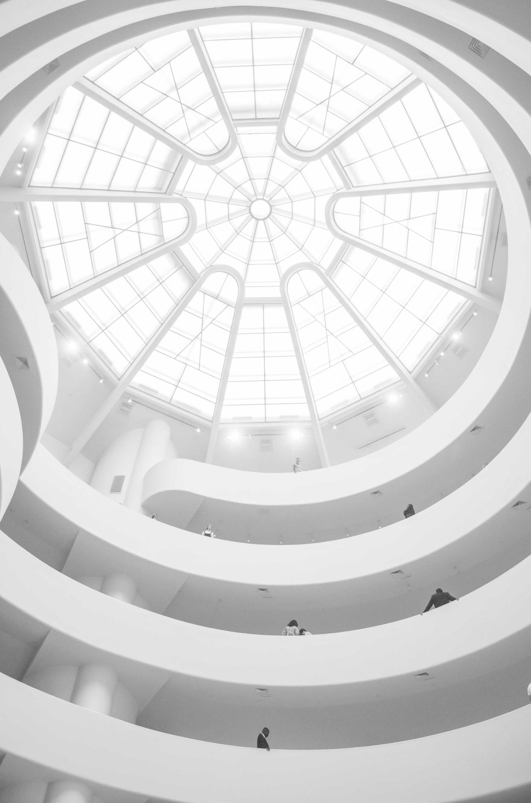

We design schools and libraries

Our Oslo practice has built 31 schools and nine libraries since 2004.

Card models
Every building starts as a card model. The school sees it before we draw a line.
- 01Brief with the people who will use it4 weeks
Teachers, librarians, caretakers and pupils, in their building.
- 02Card models, three of them6 weeks
One picked, two kept for the parts people liked.
- 03Drawings and the planning application5 months
- 04On site every week until the keys14 to 22 months